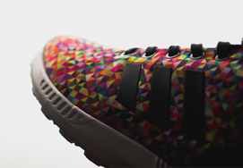

we are legends
Everyday
we are legends
Everyday
we are legends
Everyday
Victorias Secret Fashion Show: Kendall Jenner And Cigi Makes Their Debut

How fasshionable summer shoes in 2016
What color is fashionable in the evening
The most stylish men of the past 100 years
What can be worn with a shirt this year
Victoria Secret
Close